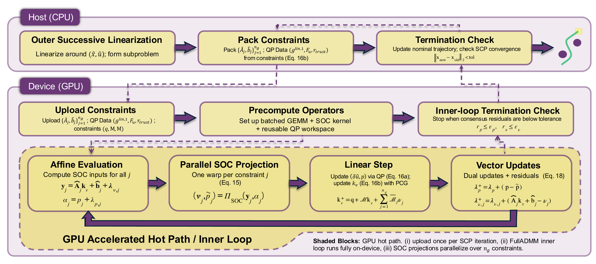
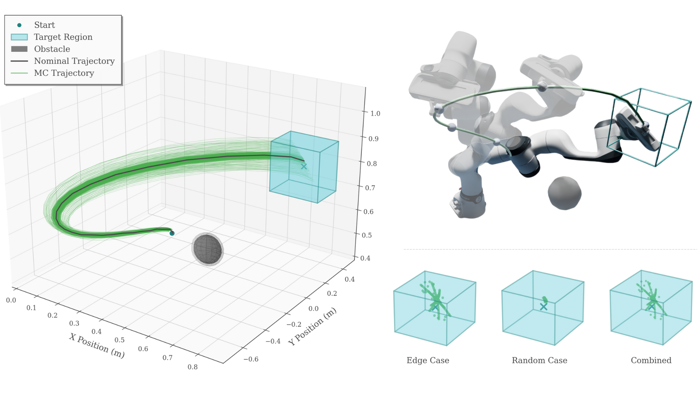
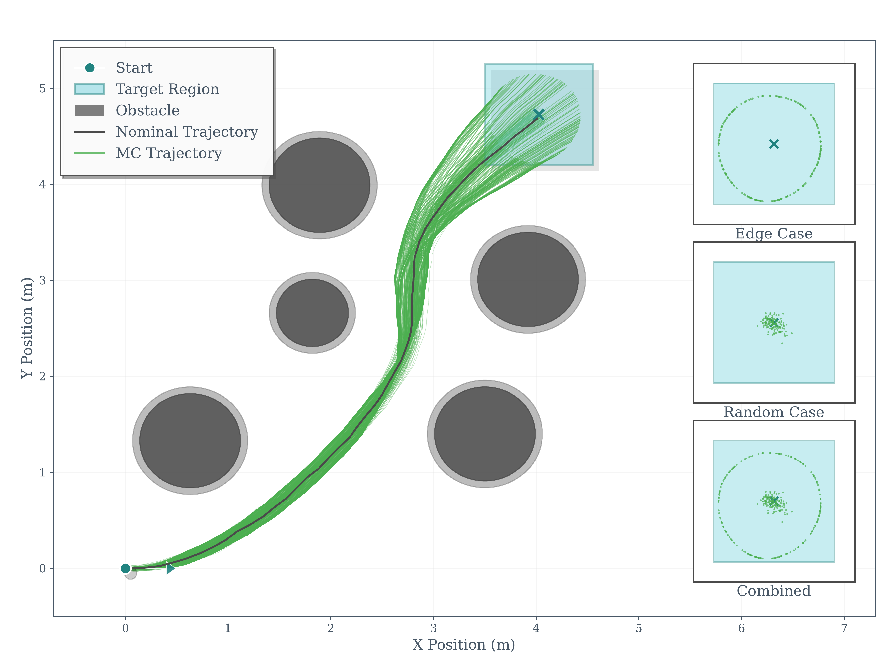
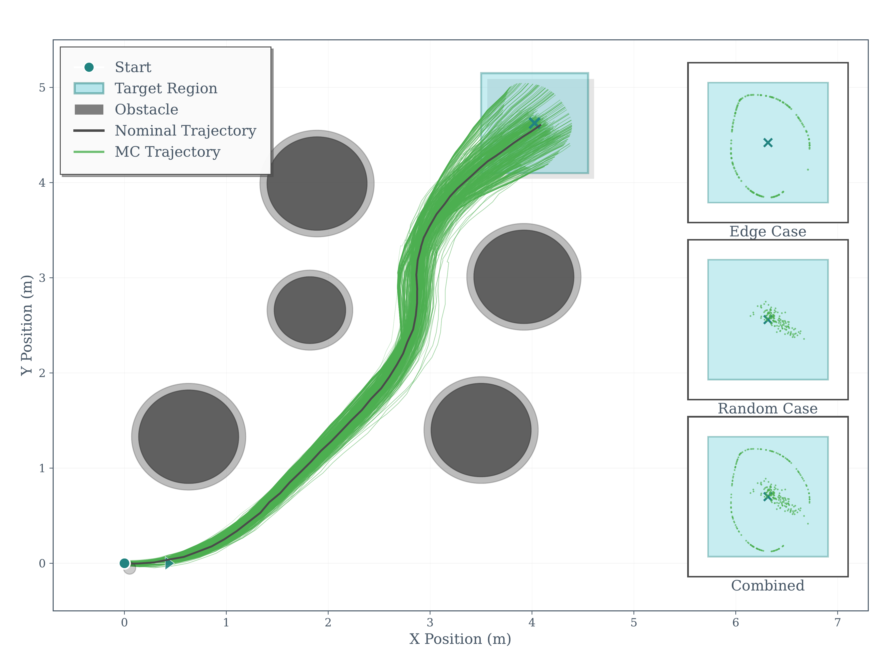
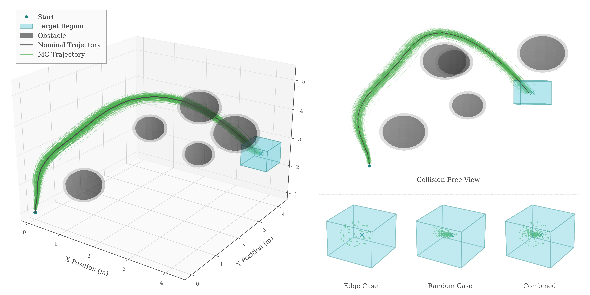
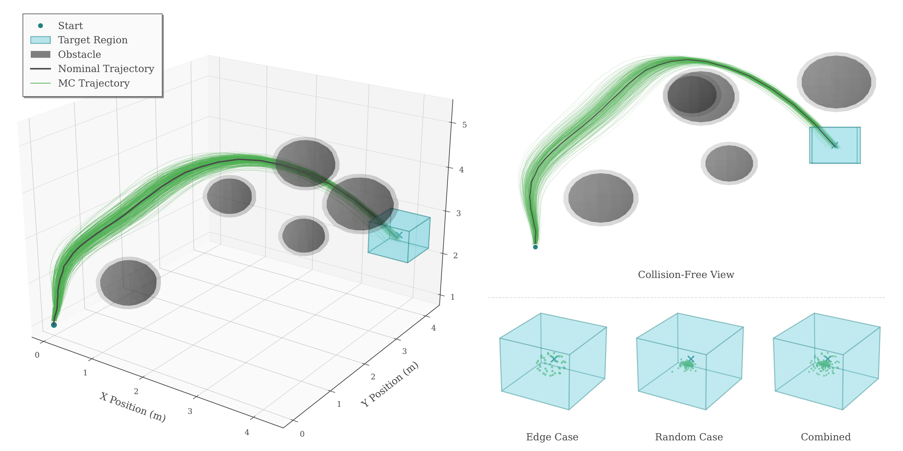
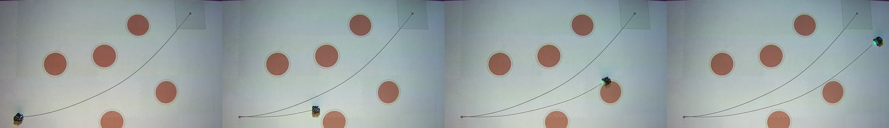

Robust trajectory optimization enables autonomous systems to operate safely under uncertainty by computing control policies that satisfy the constraints for all bounded disturbances. However, these problems often lead to large Second Order Conic Programming (SOCP) constraints, which are computationally expensive. In this work, we propose the CUDA Nonlinear Robust Trajectory Optimization (cuNRTO) framework by introducing two dynamic optimization architectures that have direct application to robust decision-making and are implemented on CUDA. The first architecture, NRTO-DR, leverages the Douglas-Rachford (DR) splitting method to solve the SOCP inner subproblems of NRTO, thereby significantly reducing the computational burden through parallel SOCP projections and sparse direct solves. The second architecture, NRTO-FullADMM, is a novel variant that further exploits the problem structure to improve scalability using the Alternating Direction Method of Multipliers (ADMM). Finally, we provide GPU implementation of the proposed methodologies using custom CUDA kernels for SOC projection steps and cuBLAS GEMM chains for feedback gain updates. We validate the performance of cuNRTO through simulated experiments on unicycle, quadcopter, and Franka manipulator models, demonstrating speedup up to 139.6×.
cuNRTO addresses the computational bottleneck of Nonlinear Robust Trajectory Optimization by offloading the expensive inner-loop SOCP solves onto the GPU. The outer successive convexification loop runs on the CPU, while the inner-loop solver executes entirely on the GPU. We propose two architectures: NRTO-DR applies Douglas-Rachford splitting to decompose SOCP subproblems into parallel SOC projections and sparse affine-set projections. NRTO-FullADMM reformulates the entire inner loop using ADMM, moving all update blocks onto the GPU and achieving 86.5% GPU utilization (vs. 34.9% for NRTO-DR).

The cuNRTO pipeline. The outer successive linearization loop runs on the Host (CPU), while the inner ADMM loop runs entirely on the Device (GPU) with parallel SOC projections.

End-effector trajectory with obstacle avoidance validated in Isaac Sim. NRTO-FullADMM achieves 25.9× wall-clock speedup with 100% constraint satisfaction.

Unicycle — NRTO-DR

Unicycle — NRTO-FullADMM

Quadcopter — NRTO-DR

Quadcopter — NRTO-FullADMM

@inproceedings{wang2026cunrto,
title = {cuNRTO: GPU-Accelerated Nonlinear Robust
Trajectory Optimization},
author = {Wang, Jiawei and Abdul, Arshiya Taj
and Theodorou, Evangelos A.},
booktitle = {Robotics: Science and Systems (RSS)},
year = {2026}
}